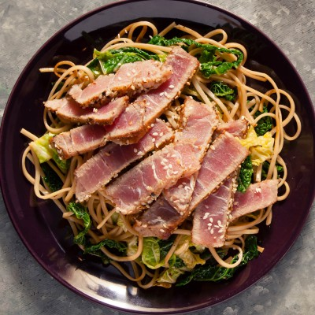

Tuna steak with miso butter basted chicory

Story
So, first of all, the picture on this page is not correct, but this is the closest I could find. I was watching Tom Straker's butter series and he made this amazing miso butter and he used it to baste fried cabbages. I wanted to recreate it as a side dish, but I couldn't find the same cabbage at my local grocer and I wanted to add some proteins as well to make it a complete dish. Since the miso butter has a Japanese vibe to it, I decided to go with tuna steak. This is how this dish was born.
Ingredients
For the miso butter basted chicory
- 300 g unsalted high quality butter
- 100 g dark miso
- 50 ml soy sauce (low sodium)
- 50 ml honey
- Fresh whole chicories
- Salt
- Spring onions for garnish
- Lime for garnish
For the marinated tuna steak
- 500 g tuna steak
- 4 tbsp soy sauce
- 2 tsp sesame oil
- 2 tsp wasabi (or to taste)
- 2 tsp freshly grated ginger
Preparation
So first we need to prepare the miso butter, then we will marinate the fish, fry the chicories, baste them, and finally we'll fry the fish and let it rest.
- Combine the butter, the miso, the soy sauce and the honey in a big bowl and whisk it until it becomes completely homogenous. This recipe will make much more miso butter than you need for the chicories but you can pop the rest int the fridge and just put it on toast and stuff.
- When you're done with the butter, take a piece of baking paper and roll up the butter into a sausage and whack it in the fridge.
- Now cut the chicories in half, and fry them on a bit of butter or oil in a pan on medium-high heat. You should fry them the cut side down and until nicely charred and brown.
- In the meantime, mix the soy sauce, the sesame oil, the wasabi and the ginger in a container and put the fish in there too for about 10 minutes to marinate.
- When the chicories are done, turn down the heat to low and turn the brassicas around. Put a tablespoon of miso butter on each half and let the butter melt and soak the veggies. Baste them a lil bit and turn off the heat.
- Last but not least, fry the tuna steaks to the rawness of your liking. After that, let it rest a couple minutes.
- Now plate up, garnish with spring onions and a wedge of lime and mangia.